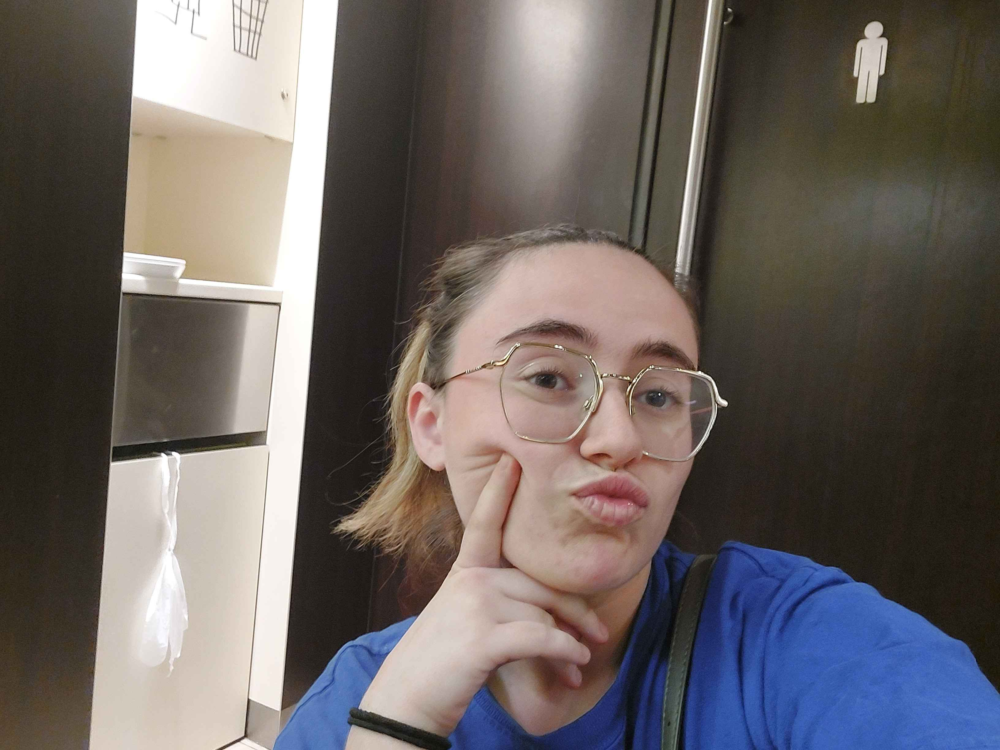
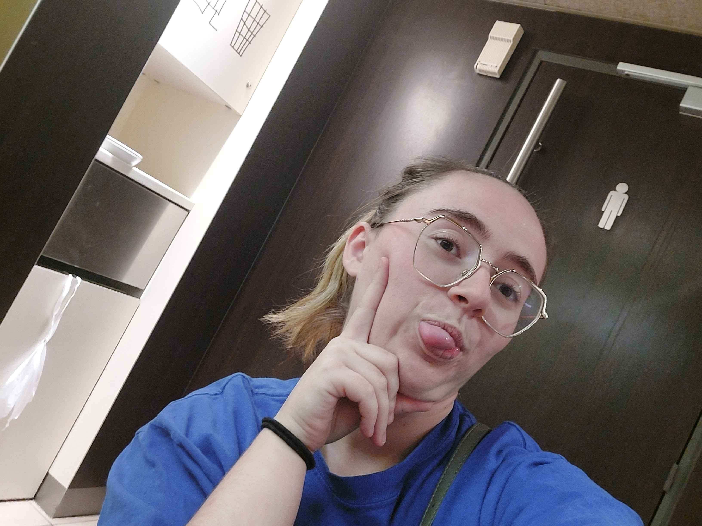

L'équipe
-
Amandine la Multitâche
Amandine la Multitâche, c’est le genre de personne qui peut envoyer des mails, faire la cuisine, prendre des notes sur une réunion Zoom, et caresser le chat, tout ça en même temps, sans jamais laisser tomber son sourire. Elle est une virtuose du post-it, reine du bullet journal, et pourrait probablement piloter un avion avec un seul bras, tout en tricotant un pull pour son chien avec l’autre. Son café est plus caféiné que le code d’une carte bancaire et elle a une relation toxique avec sa to-do list : elle la raye autant qu’elle la rallonge.
-

Amandine la Philosophique
Quand Amandine la Philosophique entre en scène, préparez-vous à des conversations profondes... ou complètement absurdes. Elle peut passer de « Pourquoi sommes-nous ici ? » à « Est-ce que les pâtes sentent la liberté ? » en un clin d'œil. Avec elle, chaque repas devient un débat existentiel, chaque promenade une exploration spirituelle, et chaque tasse de thé une réflexion sur le sens de la vie. Ne soyez pas surpris si elle vous demande quel est le but ultime de votre sandwich au fromage : avec Amandine, tout est matière à réflexion.
-

Amandine la Drama Queen
Si un jour vous croisez Amandine la Drama Queen, sachez qu’elle vit sa vie comme si elle jouait dans une telenovela. La moindre contrariété devient une tragédie grecque, chaque succès est célébré comme une victoire olympique, et le café froid… n’en parlons même pas, c’est une catastrophe planétaire. Quand elle raconte une histoire, attendez-vous à des gestes amples, des soupirs théâtraux, et peut-être même une larme ou deux, même si c’est juste parce que son stylo a arrêté d’écrire.
-

Amandine la Gourmande
Amandine la Gourmande est une épicurienne autoproclamée dont les papilles gustatives sont en éveil constant. Sa devise ? « Il n’y a pas de problème que du fromage fondu ne puisse résoudre. » Elle peut parler d’un macaron comme si c’était une œuvre d’art et passer des heures à débattre de la meilleure cuisson pour un croissant. Son frigo est un temple de la gourmandise et elle a un radar intégré pour repérer le meilleur resto du coin, même en pleine nuit. Avec Amandine la Gourmande, chaque repas est une fête, et chaque dessert mérite un standing ovation.
-
Amandine l'Influenceuse Improbable
Amandine l'Influenceuse Improbable a deux mille abonnés sur Instagram, et personne ne sait vraiment comment c’est arrivé. Ses photos de chats mal cadrées, ses vidéos de « tutos » maquillage ratés, et ses stories de 20 minutes sur « l’importance de l’hydratation » fascinent ses fans, même si elle n’a toujours pas compris comment fonctionnent les filtres. Elle publie ses recettes inventées (« pizza au Nutella avec saucisses ») et partage ses avis tranchés sur les séries qu’elle n’a jamais vues. Bref, c’est une star à sa manière, et elle le sait... même si son compte est privé.